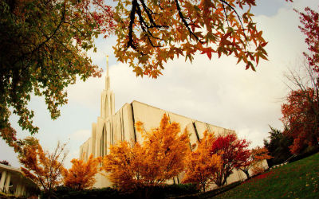

Temple Information
Oakland, California
4770 Lincoln Ave
Oakland, CA 94602-2535, USA
(510)531-3200
e-Mail:
The Oakland California Temple is the 15th constructed and 13th operating temple of The Church of Jesus Christ of Latter-day Saints. During a January 23, 1961 meeting, plans for the temple were announced by David O. McKay. Ground was broken on May 26, 1962, with the cornerstone laid May 25, 1963, and dedication on November 19, 1964.
Endowment Schedule
Tuesday-Friday: Every hour from 7am to 8pm
Saturday: 5:30am, 6:00am, 7:00am, 8:00am, 8:30am, 9:00am, 9:30am, 10:00am, 10:30am, 11:00am, 11:30am, 12:00pm, 1:00pm, 2:00pm,3:00pm, 4:00pm
Baptism Schedule
Tuesday-Friday: 7:00am - 5:00pm for walk-ins and Appointments; 5:00pm - 9:00pm Chruch Groups
Saturday:5:30am - 4:00pm Church Groups-Appointments Only; 4:00pm-8:00pm Family Priority Time - Walk-in & Appointments
Available Services
- Clothing Rental
- Cafeteria
- Distribution Center
Temple Closure Date
San Diego, California
7474 Charmant Drive
San Diego, CA
(858)622-0991
e-Mail:
The San Diego California Temple is the 47th constructed and 45th operating temple of The Church of Jesus Christ of Latter-day Saints. Located near the La Jolla community of San Diego, it was built with two main spires, but unique to this temple are four smaller spires at the base of each main spire. The East spire is topped with the familiar Angel Moroni statue which adorns most LDS temples.
Endowment Schedule
Tuesday-Friday: 5:30am(Tues Only), 8:00am, 9:00am, 9:30am, 10:00am, 11:00am, 12:00pm, 1:00pm, 2:00pm, 3:00pm, 4:00pm, 5:00pm, 6:00pm, 6:30pm, 7:00pm, 7:30pm
Saturday: 7:30am, 8:00am, 8:30am, 9:00am, 9:30am, 10:00am, 10:30am, 11:00am, 11:30pm 12:00pm, 12:30pm, 1:00pm, 2:00pm, 3:00pm, 4:00pm, 5:00pm, 6:00pm, 6:30pm, 7:00pm
Baptism Schedule
Tuesday-Friday: 8:00am - 5:00pm for walk-ins and Appointments; 5:00pm - 8:00pm Chruch Groups
Saturday:7:00am - 3:00pm Church Groups-Appointments Only; 3:00pm-7:30pm Family Priority Time - Walk-in & Appointments
Available Services
- Clothing Rental
- Cafeteria
- Distribution Center
Temple Closure Date
Seattle, Washington
2808 148th Avenue South East
Bellevue, WA 94602-2535, USA
(425)643-5144
e-Mail:
The Seattle Washington Temple is the 21st constructed and 19th operating temple of The Church of Jesus Christ of Latter-day Saints. Located in the city of Bellevue, east of Seattle, it was the first to be built in the state of Washington. The temple has a modern single-spire design. Ground was broken on May 27, 1978, with the dedication on November 17, 1980.
Endowment Schedule
Tuesday-Friday: 5:30am(Tues & Wed Only), 8:00am, 9:00am, 10:00am, 11:00am, 12:00pm, 1:00pm, 2:00pm, 3:00pm, 4:00pm, 5:00pm, 6:00pm, 6:30pm, 7:00pm, 7:30pm
Saturday: 6:00am, 6:30am, 7:00am, 7:30am, 8:00am, 8:30am, 9:00am, 10:00am, 10:30am, 11:00am, 11:30am, 12:00pm, 12:30pm, 1:00pm, 1:30pm, 2:00pm, 3:00pm, 4:00pm, 4:30pm, 5:00pm, 6:00pm, 6:30pm, 7:00pm, 7:30pm
Baptism Schedule
Tuesday-Friday: 6:00am - 5:00pm for walk-ins and Appointments; 5:00pm - 8:30pm Chruch Groups
Saturday:6:30am-10:00pm and 4:00pm-8:30pm Church Groups-Appointments Only; 10:00am-4:00pm Family Priority Time - Walk-in & Appointments
Available Services
- Clothing Rental
- Cafeteria
- Distribution Center
Temple Closure Date
Provo City, Utah
50 South University Ave
Provo, Ut, USA
(801)343-2700
e-Mail:
The Provo City Center Temple is a temple of The Church of Jesus Christ of Latter-day Saints on the same site as the former Provo Tabernacle in Provo, Utah. Completed in 2016, the temple utilizes much of the external shell of the tabernacle, all that remained of the original building after a fire in December 2010. Ground was broken on May 12, 2012, with the dedication on March 20, 2016.
Endowment Schedule
Tuesday-Friday: Every hour from 6am to 8pm
Saturday: 6:00am, 7:00am, 8:00am, 9:00am, 10:00am, 11:00am, 12:00pm, 1:00pm, 2:00pm,3:00pm, 4:00pm, 5:00pm, 6:00pm, 7:00pm, 8:00pm
Baptism Schedule
Tuesday-Friday: 6:00am - 8:00pm for walk-ins and Appointments
Saturday: 6:00am - 8:00pm for walk-ins and Appointments
Available Services
- Clothing Rental
- Distribution Center